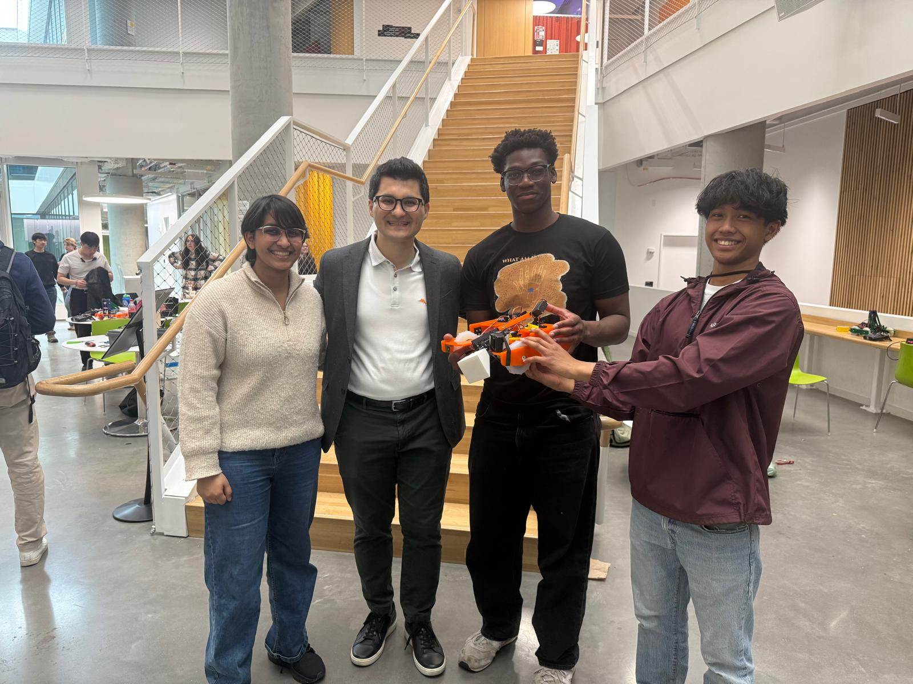
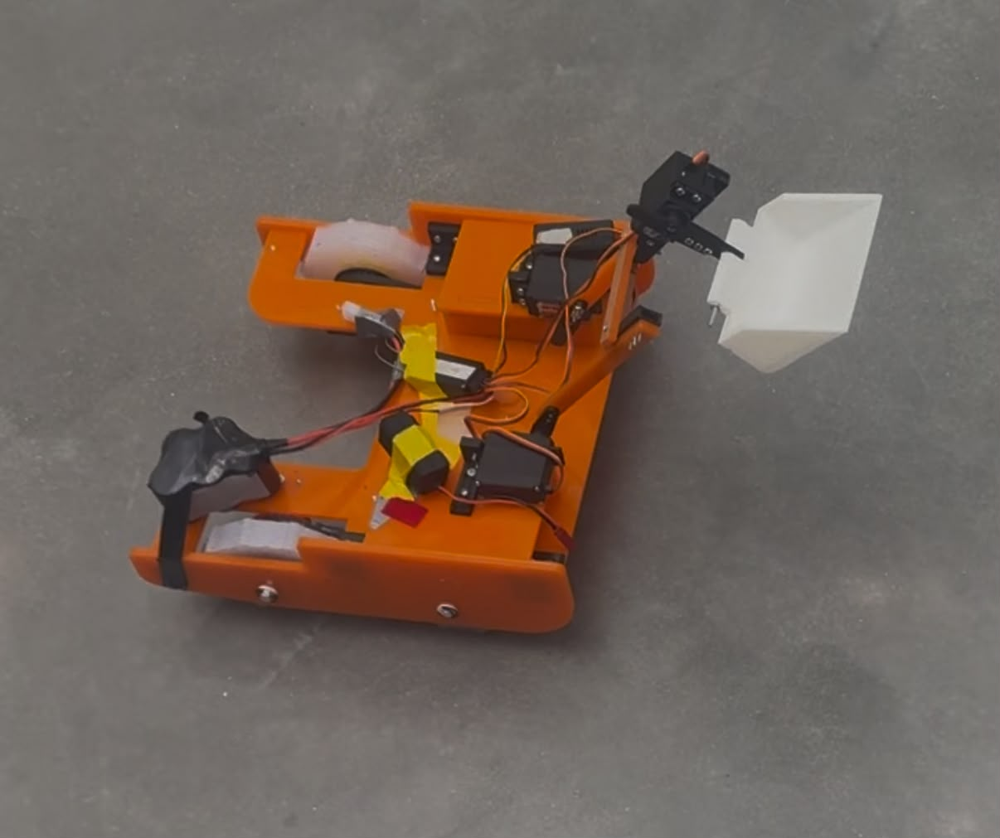

Project overview
This project was completed for ES 51, an engineering design class. My team built a robot for a class competition, which required us to think through drivetrain design, mechanism design, fabrication constraints, testing, and performance under real competition conditions.
The project was guided by Professor Seymur Hasanov . The full final report below includes the design process, calculations, testing, bill of materials, analysis, and final reflections.

The robot
Our robot was designed to move across the competition field and use a scoop mechanism to collect and lift game pieces. The final design combined a drivetrain, scoop, servo mechanisms, fabricated parts, and repeated testing.

Testing the mechanisms
A major part of the project was testing whether the robot could move reliably and whether the scoop mechanism could actually do what we wanted under competition conditions.
Final report
The full project documentation is embedded below. You can also open or download the PDF directly.